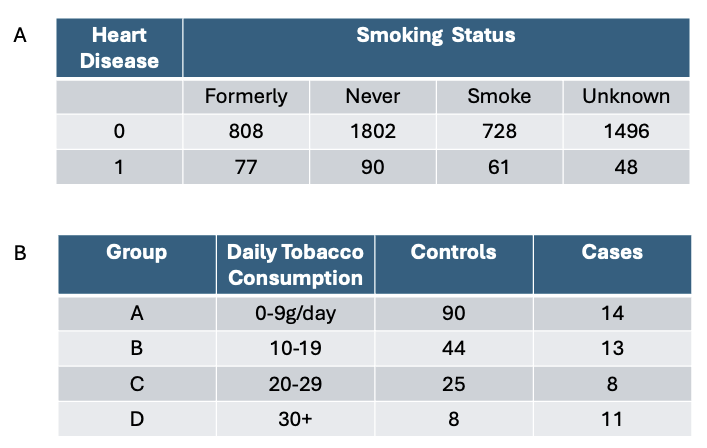
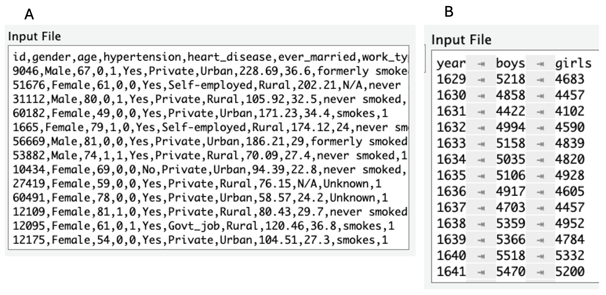
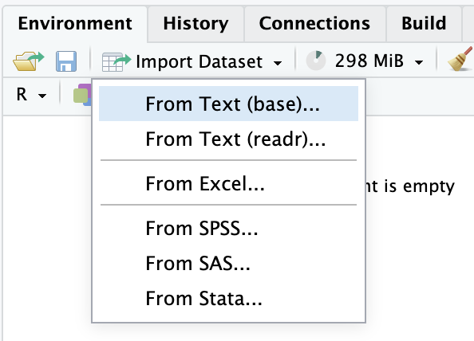
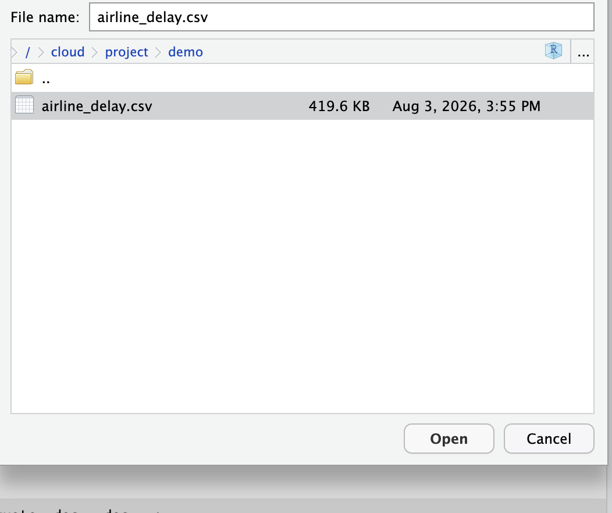

So far, we have discussed the basics of R that are sufficient for most situations. In this chapter, we will discuss several practical operations that require a more detailed discussion. That includes how to create summary tables from published work, create a small data set in a data frame, load a data set of any size into RStudio, convert a data set from a wide format to a long format, from a long format to a wide format, the family of apply() functions, and a second look at group_by().
Learning Objectives:
Recreate a summary table from published work.
Create a small data frame with data.
Load a data set into RStudio.
Convert a data set from a wide format to a long format.
Convert a data set from a long format to a wide format.
Harness the family of apply() functions.
Revisit group_by().
5.1 Recreate a Summary Table in R
`summarise()` has regrouped the output.
ℹ Summaries were computed grouped by agegp and tobgp.
ℹ Output is grouped by agegp.
ℹ Use `summarise(.groups = "drop_last")` to silence this message.
ℹ Use `summarise(.by = c(agegp, tobgp))` for per-operation grouping
(`?dplyr::dplyr_by`) instead.
You see the data summary tables as those in @fig-5-1, so you want to recreate and analyze them yourself. The table() or group_by() functions mentioned in the previous chapters cannot help in this situation, as they require the raw data, like iris, where the information of each sample is accessible.

Figure 5.1: Recreate summary tables
Here you will create the two tables in R as shown in Figure 5.1. Let us begin with the first table, which is a contingency table with two rows and five columns. As all the values in the table are numeric, each row is represented by a numeric vector. Here, we will use the c() function to create it. See Section 1.2.3. But the vector designated for the first row here is slightly different because we want to specify the column names and the values together (a named vector); as a result, the columns in the resultant table will be named.
Note that the order of the values in the named vector row1 determines the order of the columns in the table. Ensure that the same order is maintained for subsequent rows.
When all the rows have been defined, they will be stacked up into a table using the rbind() function as shown below.
Note that names row1 and row2 on the left are the names of the rows (rownames), they do not constitute a column of the table. Hence, it is a 2x5 table as shown by the dimension function dim() below.
The second table in Figure 5.1 is different from the first one as each row contains a mixture of character (daily tobacco onsumption ) and numeric values (controls and cases), making vectors unsuitable for this situation. R provides an object similar to vectors, ordered sequences, that is the list object. The main difference between a vector and a list is that the latter allows values to have different data types, i.e., heterogeneous. Below is an example to define rows as list objects:
Similarly, the row (A) defines the values and column names of the resultant table. Now, rows are stacked up together to form a 4x4 table.
my_tab2 <-rbind(A,B,C,D)my_tab2
group daily_toba ncontrols ncases
A "A" "0-9" 90 14
B "B" "10-19" 44 13
C "C" "20-29" 25 8
D "D" "30+" 8 11
print(dim(my_tab2))
[1] 4 4
5.2 Create a small data frame with data in R
Here we will discuss two approaches to store a small data set in a data.frame object. If the data set is large, my recommendation is to store the data in a spreadsheet, e.g., Google Sheets or Microsoft Excel, and then upload it into RStudio. See the next section for more details.
5.2.1 Use data.frame() Function
Here is the first approach to create a data frame that takes two steps. The first step is to define each column (variable) as a vector, and then use the data.frame() function to combine them into a data frame. Here is an example to create a data frame with two columns: group, and systolic blood pressure (sbp), and eight rows. Two vectors, each with eight values, are created below:
group sbp
1 A 120
2 A 135
3 A 133
4 A 128
5 A 130
6 B 150
7 B 160
8 B 158
5.2.2 Use read.table() Function
The second approach is to type out the values in columns as in the example below, and feed it to the read.table() function through the text= parameter.
group sbp
1 A 120
2 A 135
3 A 133
4 A 128
5 A 130
6 B 150
7 B 160
8 B 158
There is no good or bad of either approach unless you want to use some R functions to generate the column vectors. In such a case, the first approach using data.frame() function is more trackable.
5.3 Load Data Sets into RStudio
Data sets are usually too large to be typed using the methods discussed in the previous section. Here, you will learn several ways to load a data set stored in a file into RStudio. The two common data file formats are: comma-separated (.csv) or tab-separated (.txt or .tsv). In a .csv file, the comma (,) serves as a column separator, separating data in one column from the other column, as shown in panel A of Figure 5.2. The other common separator is the tab value, which is usually invisible but is deliberately made visible in panel B.

Figure 5.2: File formats
5.3.1read.csv() and read.table() Functions
R provides two functions to read the data file directly into RStudio. read.csv() reads a .csv file from the location provided. The location can be a URL or a file path to a file on your computer. For example, load the flight delays file from here: https://www.openintro.org/data/csv/airline_delay.csv. The first parameter is the file location. Make sure that it is in quotes.
year month carrier carrier_name airport
1 2020 12 9E Endeavor Air Inc. ABE
2 2020 12 9E Endeavor Air Inc. ABY
3 2020 12 9E Endeavor Air Inc. AEX
4 2020 12 9E Endeavor Air Inc. AGS
5 2020 12 9E Endeavor Air Inc. ALB
6 2020 12 9E Endeavor Air Inc. ATL
airport_name arr_flights
1 Allentown/Bethlehem/Easton, PA: Lehigh Valley International 44
2 Albany, GA: Southwest Georgia Regional 90
3 Alexandria, LA: Alexandria International 88
4 Augusta, GA: Augusta Regional at Bush Field 184
5 Albany, NY: Albany International 76
6 Atlanta, GA: Hartsfield-Jackson Atlanta International 5985
arr_del15 carrier_ct weather_ct nas_ct security_ct late_aircraft_ct
1 3 1.63 0.00 0.12 0 1.25
2 1 0.96 0.00 0.04 0 0.00
3 8 5.75 0.00 1.60 0 0.65
4 9 4.17 0.00 1.83 0 3.00
5 11 4.78 0.00 5.22 0 1.00
6 445 142.89 11.96 161.37 1 127.79
arr_cancelled arr_diverted arr_delay carrier_delay weather_delay nas_delay
1 0 1 89 56 0 3
2 0 0 23 22 0 1
3 0 1 338 265 0 45
4 0 0 508 192 0 92
5 1 0 692 398 0 178
6 5 0 30756 16390 1509 5060
security_delay late_aircraft_delay
1 0 30
2 0 0
3 0 28
4 0 224
5 0 116
6 16 7781
The stringAsFactors=T tells the function to treat columns with text values as a categorical variable (factor), which is common in statistical analysis.
If the separator is a tab or something else, read.table() allows us to specify the actual separator. For example, another version of the same flight delays file is in tab-separated format. So, tab is used as the column separator of flight delays.
Warning in scan(file = file, what = what, sep = sep, quote = quote, dec = dec,
: EOF within quoted string
Warning in scan(file = file, what = what, sep = sep, quote = quote, dec = dec,
: number of items read is not a multiple of the number of columns
head(delays2)
year month carrier carrier_name airport
1 2020 12 9E Endeavor Air Inc. ABE
2 2020 12 9E Endeavor Air Inc. ABY
3 2020 12 9E Endeavor Air Inc. AEX
4 2020 12 9E Endeavor Air Inc. AGS
5 2020 12 9E Endeavor Air Inc. ALB
6 2020 12 9E Endeavor Air Inc. ATL
airport_name arr_flights
1 Allentown/Bethlehem/Easton, PA: Lehigh Valley International 44
2 Albany, GA: Southwest Georgia Regional 90
3 Alexandria, LA: Alexandria International 88
4 Augusta, GA: Augusta Regional at Bush Field 184
5 Albany, NY: Albany International 76
6 Atlanta, GA: Hartsfield-Jackson Atlanta International 5985
arr_del15 carrier_ct weather_ct nas_ct security_ct late_aircraft_ct
1 3 1.63 0.00 0.12 0 1.25
2 1 0.96 0.00 0.04 0 0.00
3 8 5.75 0.00 1.60 0 0.65
4 9 4.17 0.00 1.83 0 3.00
5 11 4.78 0.00 5.22 0 1.00
6 445 142.89 11.96 161.37 1 127.79
arr_cancelled arr_diverted arr_delay carrier_delay weather_delay nas_delay
1 0 1 89 56 0 3
2 0 0 23 22 0 1
3 0 1 338 265 0 45
4 0 0 508 192 0 92
5 1 0 692 398 0 178
6 5 0 30756 16390 1509 5060
security_delay late_aircraft_delay
1 0 30
2 0 0
3 0 28
4 0 224
5 0 116
6 16 7781
The tab on the keyboard is denoted by \t, no space between the two characters. Additionally, not all data files contain a column heading in the first row. By default, R does not assume one exists. To override the default, like the above example, specify header=T.
5.3.2 Import data in RStudio
Suppose the data file has been downloaded on your computer in the Downloads subfolder. The first step is to upload it to the RStudio Cloud Drive via Files->Upload inside the Files panel, usually on the bottom right.
Next, import the data file into RStudio via Environment -> Import Dataset -> From Text (base) as shown below:

Figure 5.3: Import Data Set
Select the file to be imported as shown in Figure 5-4 below:

Figure 5.4: Select file
A window will pop up as shown in Figure 5-4, which is a preview of the data. Do the following:
Check heading is Yes box.
Check StringAsFactors box.
Click the Import button at the bottom.
This imports the data file into RStudio and reflects it in the Environment panel on the top right.